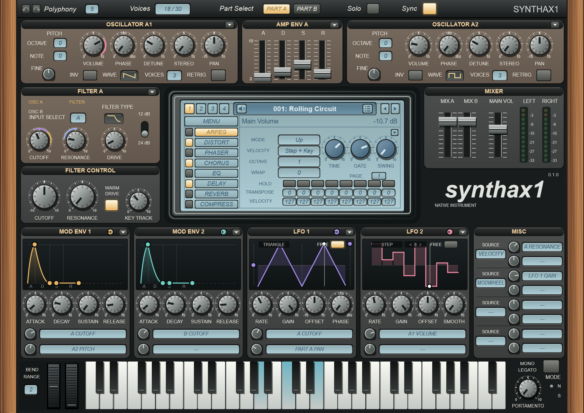
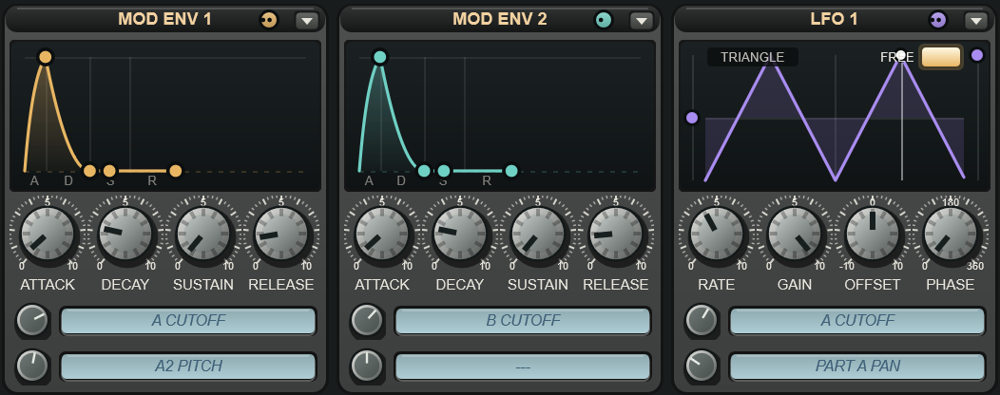
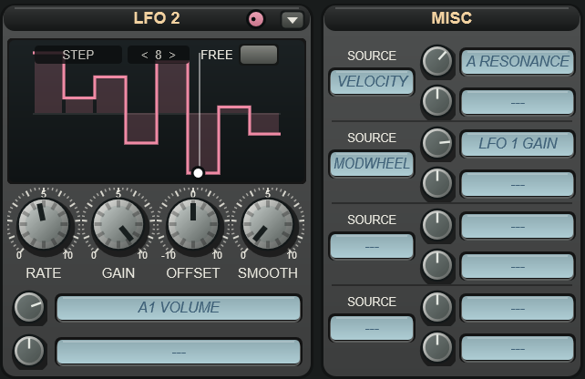
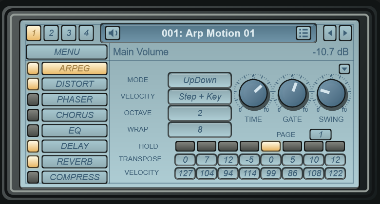
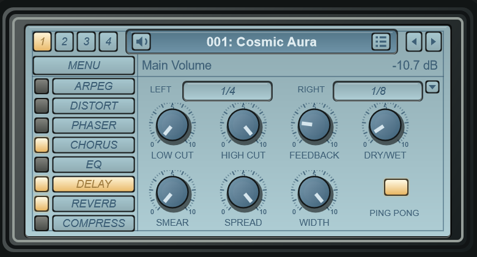
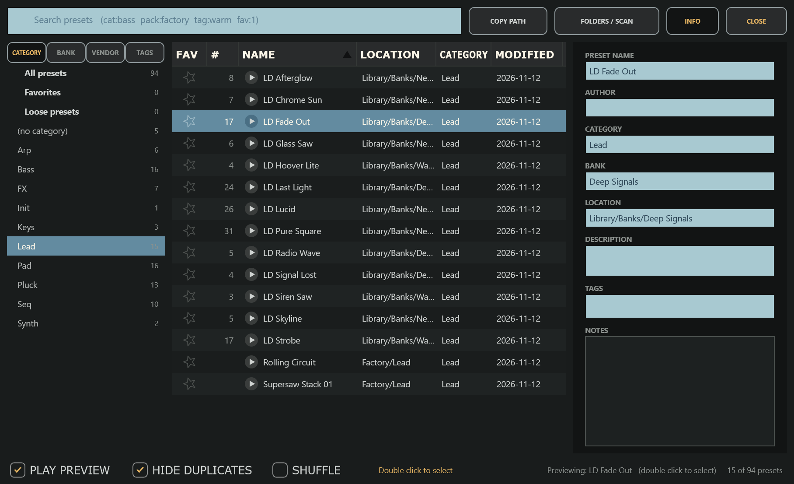
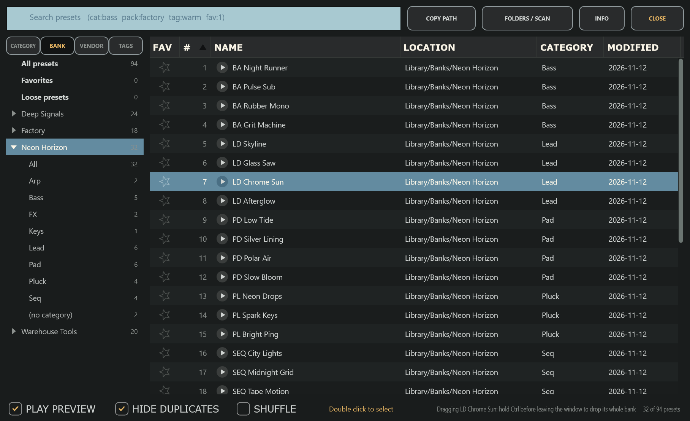
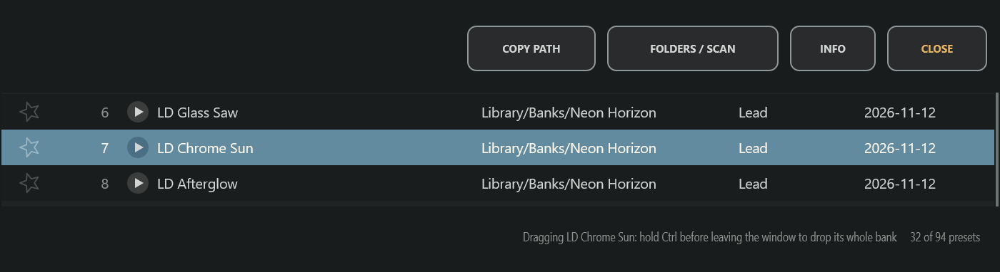
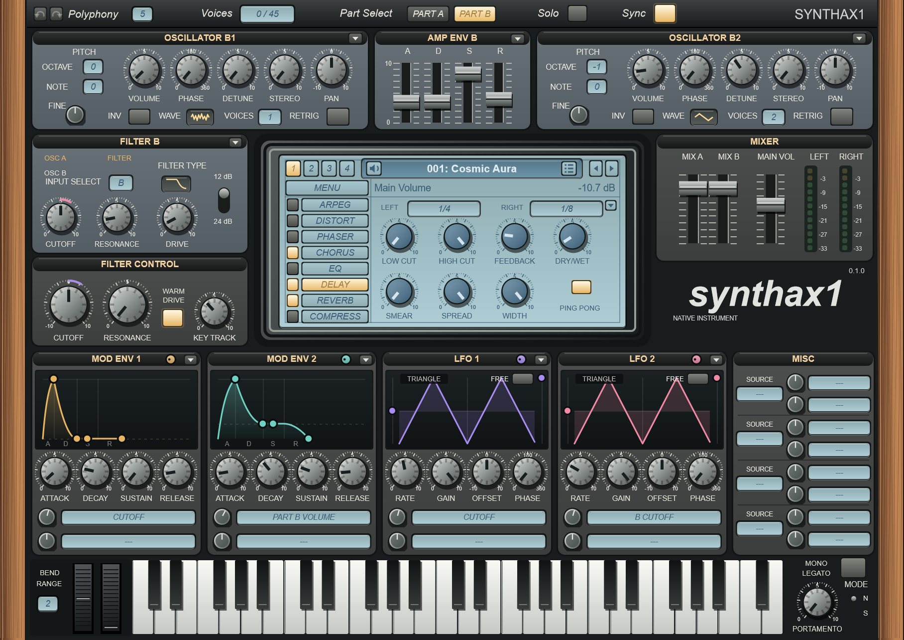

Synthax1 is a free, open-source synthesizer with four oscillators, a filter for each of its two parts and modulation you can see — plus a preset browser that finds every bank and preset on your drive and lets you hear them one click at a time.
Windows · macOS · Linux — VST3 · AU · Standalone — free & open source

A classic two-part layout, with a modulation row that shows what every source is doing.

Every envelope and LFO draws its own shape, and each panel has a colored handle: drag it onto any knob to route that source there. Each source has two route rows — an amount knob and a destination box — so what's modulated is always in plain sight.

Pick the Step shape and draw up to sixteen steps right on the display, with a Smooth knob to glide between them. A cursor follows the LFO as it runs, restarting with each new note.


Ten arp modes with per-step hold, transpose and velocity, and Wrap to loop any number of steps. Distortion, phaser, chorus, EQ, delay, reverb and compressor each get their own page on the central display.
Four oscillators with up to eight unison voices each, eight waveforms, detune, stereo and phase.
A lowpass, bandpass or highpass filter for each part, 12 or 24 dB, with input routing, drive and a shared Filter Control.
Two amp envelopes, two modulation envelopes and two LFOs, all drawn live.
Every control is a host parameter, the wheels included; right click for the host's automation menu.
Undo and redo every edit with the toolbar arrows or Ctrl+Z / Ctrl+Y; Ctrl+click resets a knob.
Arrow keys step through programs and banks; click the program name for the whole bank's list.
Point it at one folder. It finds every bank and preset below it — hundreds of thousands of programs list in seconds.

A single click loads a preset for a moment, so your track — or a middle C with Play Preview on — plays it. Step through the list with the arrow keys; a double click keeps the one you like.
cat:bass, pack:, tag: or fav:1
The BANK tab lists every bank on its own. Choose one to see all of its programs, numbered and in bank order — duplicates included — or open it to browse that bank by category.

Drag a program from a .fxb bank or .fxp file out of the browser and it drops as a .fxp file — onto a plugin, a DAW or a folder. Hold Ctrl to drop its whole .fxb bank instead. COPY PATH (or Ctrl+C) puts the file's location on the clipboard, and a right click saves a program as its own .fxp.

Synthax1 reads .fxp programs and .fxb banks in the Sylenth1® format — every container version, compressed or not — and writes unedited programs back byte for byte. Its own presets are plain .Synthax1Preset files.
Free and open source — always
The first release is on its way. Watch the repository to hear when it's out, or build it yourself today with CMake — the instructions are in the README.
Releases on GitHub